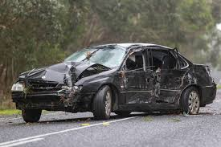

It is when a driver is using a phone while driving a vehicle. If they are caught doing it there is a $470 fine for using the phone while driving.
The normal reaction time for when driving is 1.5 seconds. However when they are using a mobile phone the reation time is increased or they do not react at all. When a driver is using a phone when driving the reaction time is increased 20 3 - 4 seconds. When this happens the vehicle will travel at least 50m before they can react when travelling 60km an hour instead of 25m.
This is relvant to younger drivers as most divers now days have at least one mobile phone. The temptation to check that text message that has just buzzed on your phone is very strong. If you check you phone then the reaction time will decrease which increases the chance of a crashes
Learner drivers are still new and do not fully know the impact of just checking their phone while driving. They are inexperienced and need to pay full attention to the road and ignore nay distractions that might be tempting to them.
Driving with a mobile phone in use will cost you $470. Mobile phone casue a quater of all crashes in Australia. They also nearly cause 46% of near crashes.
Mobile phones are never to be used while driving as they casue many crashes and many near Crashes. Mobile phones are never to be used while driving as they casue many crashes and many more near crashes.
Young drivers need to pay full attention to the road and not be tempted to check their phone. If they do then it will introduce bad habbits and reduce the reaction time they would have in a crash. They also risk getting fined $470.
© Made by John Allen